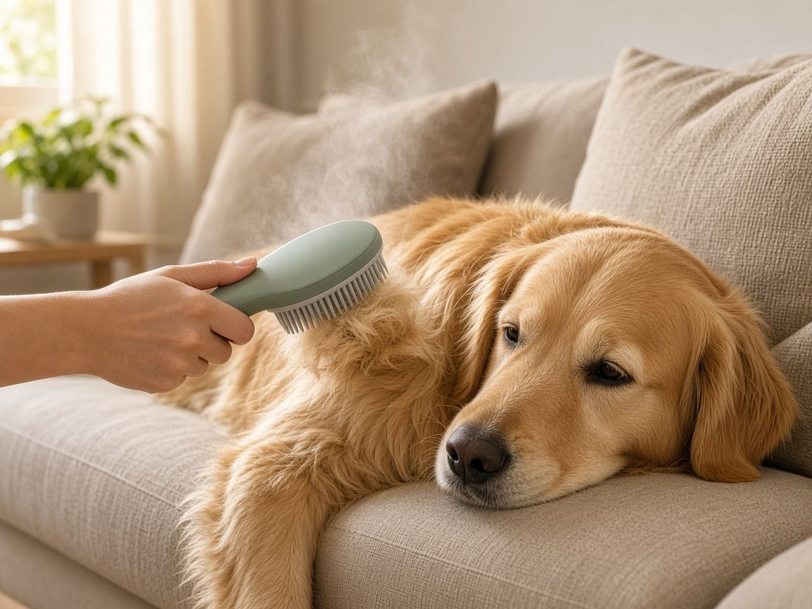

PawPocket Journal · Full Vet-Backed Edition
DOG OWNERS: READ THIS BEFORE THE NEXT MIDNIGHT SCARE
It's 11:40 PM and Your Dog Just Ate Something Off the Floor
Fur on the couch. A bath that turns into a fight. A collar that still cannot tell a stranger who to call. The Calm & Safe Kit is $49.99. This batch ships in 1-2 business days, and the fridge card plus wallet pet ID are included at $0.

You are on the kitchen floor with the flashlight on your phone. The dog is licking the same square of tile. Google has fourteen answers. None of them have met your dog.
The thing you can hold is the kit. The steam brush takes loose undercoat off the sofa. The lick mat gives the bath a job. The tag is battery-free QR/NFC, so any phone camera opens your contact and med profile. No GPS radio. If a dog is collapsing or seizing, the next stop is an emergency clinic. Emergency vet exam fees often run $100-$200+ before any treatment. VIP price is the highlighted choice at checkout, with the renewal line in plain type above the button. If you add them, that is 24/7 licensed veterinary guidance, triage, and second opinions. Typical response in under 15 minutes, 24/7.
This batch ships in 1-2 business days. The fridge card and wallet pet ID ride along at $0.
60-Day Happy Pet Guarantee: full refund on the kit if you're not happy, no need to send it back. Ships in 1-2 business days. Delivered in 3-7 business days (US). Free shipping on 2+ kits.
Get the Calm & Safe Kit — $49.99 →
The three things in the box

Nothing in the box is a medical device. The point is that the messy parts of the week — shedding, bath time, and a lost-dog scenario — have a tool that lives at home, not in a reminder you will forget.
1. A steam brush for the undercoat

The forest-green brush puts a little steam ahead of a metal comb. Undercoat that would have drifted across the sofa comes off in the brush instead. Use it on a calm dog, the way you would any deshedder. Stop if the skin looks irritated and ask your own veterinarian about the skin, not the brush.
2. A lick mat that suctions to the tile

The terracotta mat sticks to the wall so your dog has somewhere to put their face while you rinse. A thin smear is the whole trick. Read the label. Some sugar-free peanut butters use xylitol, which is dangerous for dogs. If the jar lists xylitol, it does not go on the mat.
Get the Calm & Safe Kit — $49.99 →
3. A collar tag with no battery and no GPS

The tag is battery-free QR/NFC. A finder points a phone camera at it and the pet's emergency contact and med profile open. That is the entire mechanism. There is no GPS radio in the tag, no monthly map subscription, and no live dot to watch. You can preview the page a finder would see before you ever put the tag on a collar.
Get the Calm & Safe Kit — $49.99 →
Stories, when they are real
We are not going to invent a neighbor, a star rating, or a number of dogs. If you have used the kit and you want the story here, there is a slot waiting. Until then the slot stays visibly empty.
Mara K. · Austin, TX The golden retriever fur was a second rug. One pass with the steam brush and the couch looked like a couch again. It lives by the front door now.
Andre P. · Columbus, OH Bath night used to be a two-person job. The lick mat stuck to the tile, the Lab stayed busy, and I finished a rinse without wrestling.
Priya S. · Portland, OR The gate was open for half a minute. A neighbor scanned the tag with the camera already in their phone. No battery in the tag, and no map to pay for.
Luis G. · Tampa, FL Midnight, a sock, and a dog who would not tell me how much. The kit was the thing I could actually put my hands on.
Helen W. · Denver, CO Two shepherds, one sofa. The second kit shipped with free shipping on two kits, which is the deal that made me order both.
Noah B. · Chicago, IL Our cat found a sugar-free jar. I called our own vet. The collar tag is battery-free and it does not track her.
Get the Calm & Safe Kit — $49.99 →
VIP price is highlighted at checkout. One-time purchase is $49.99. The renewal line stays visible while VIP is selected.